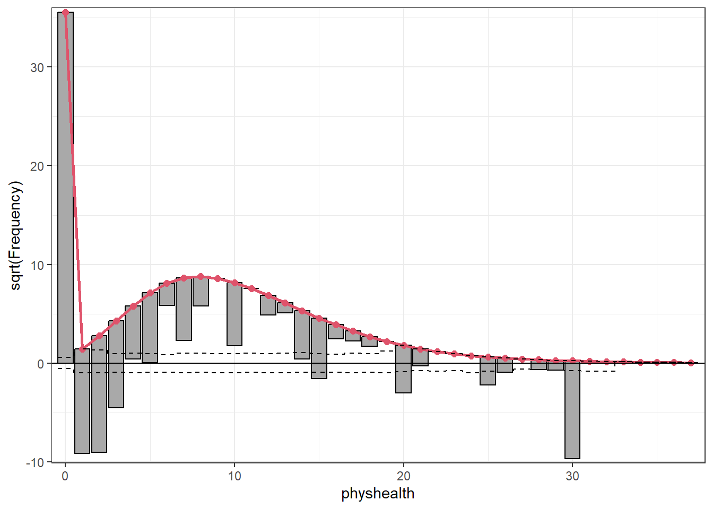
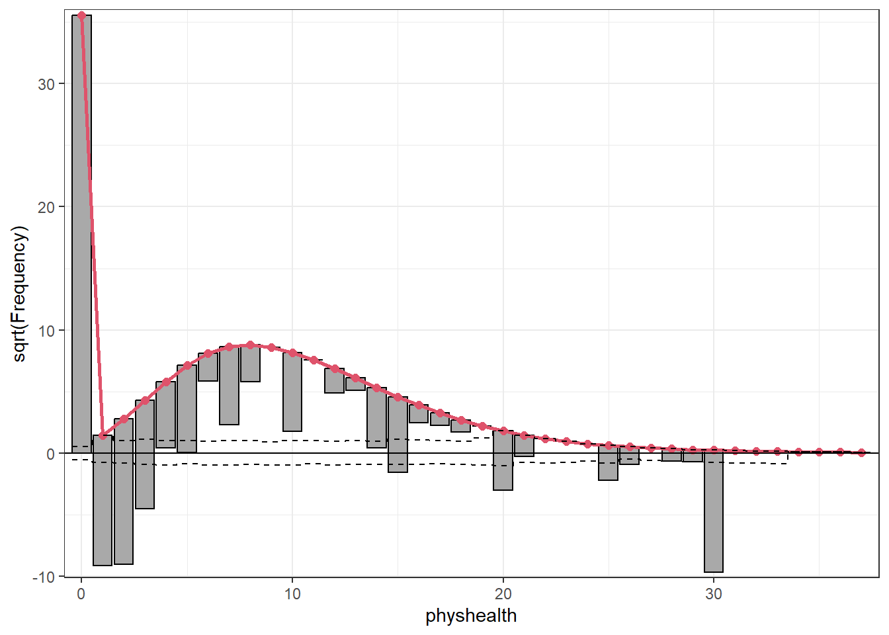
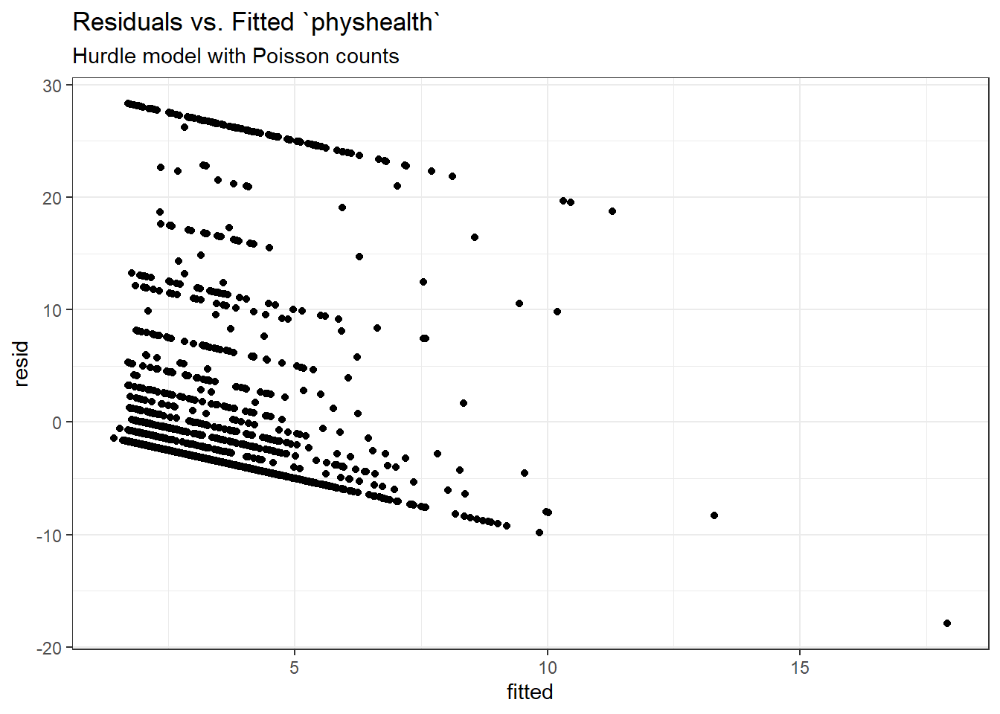
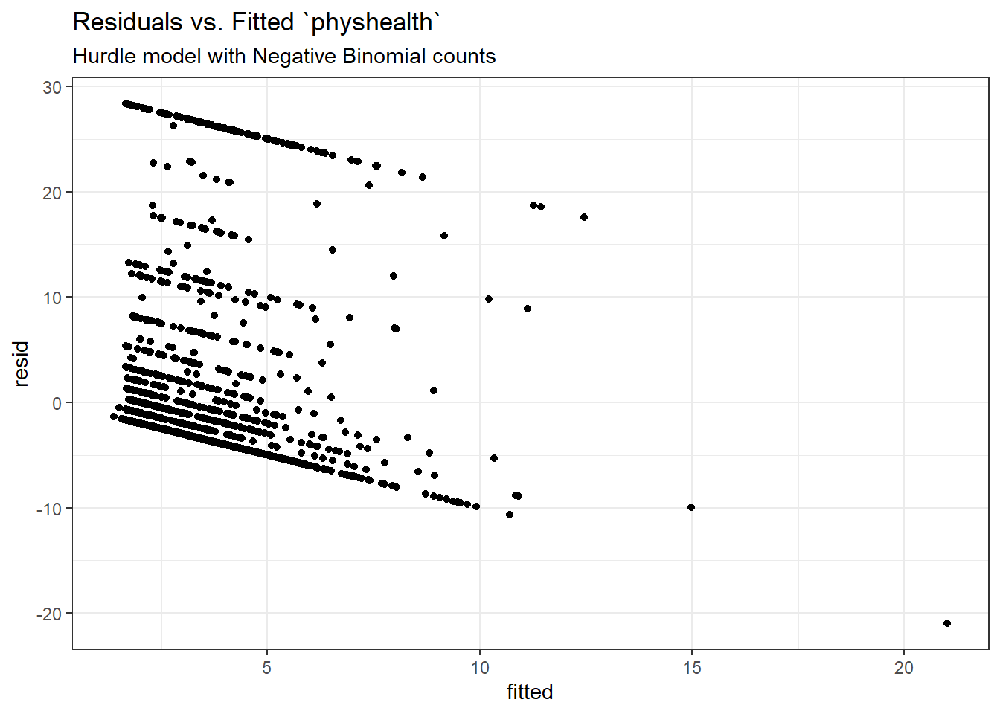
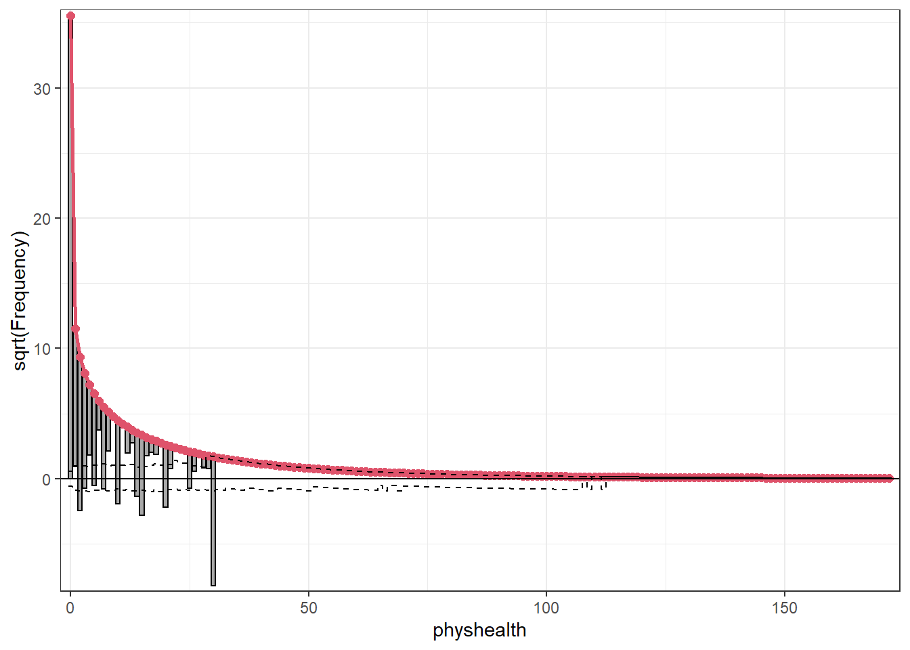
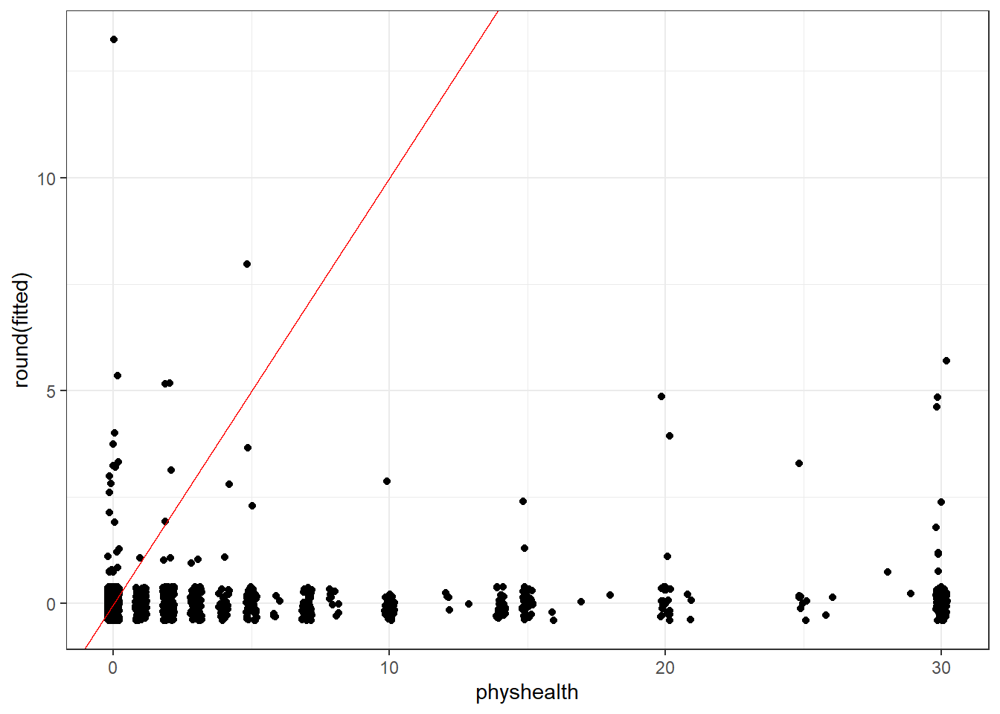
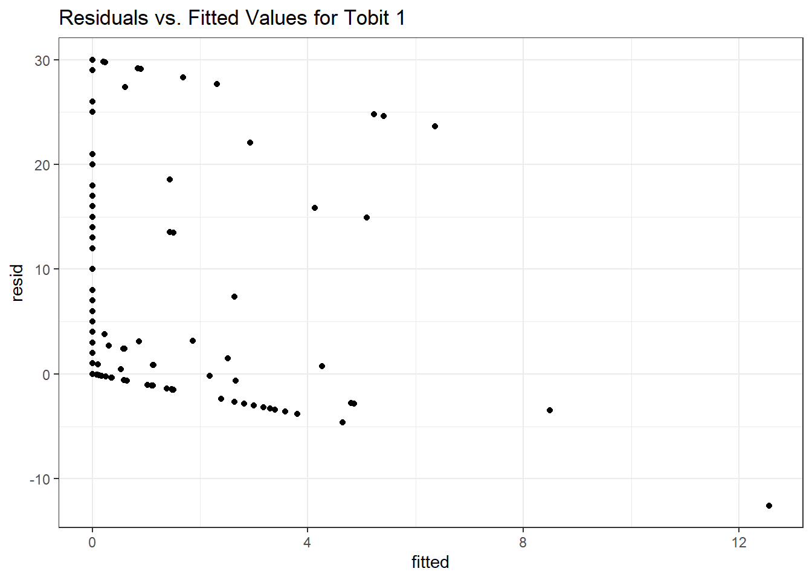
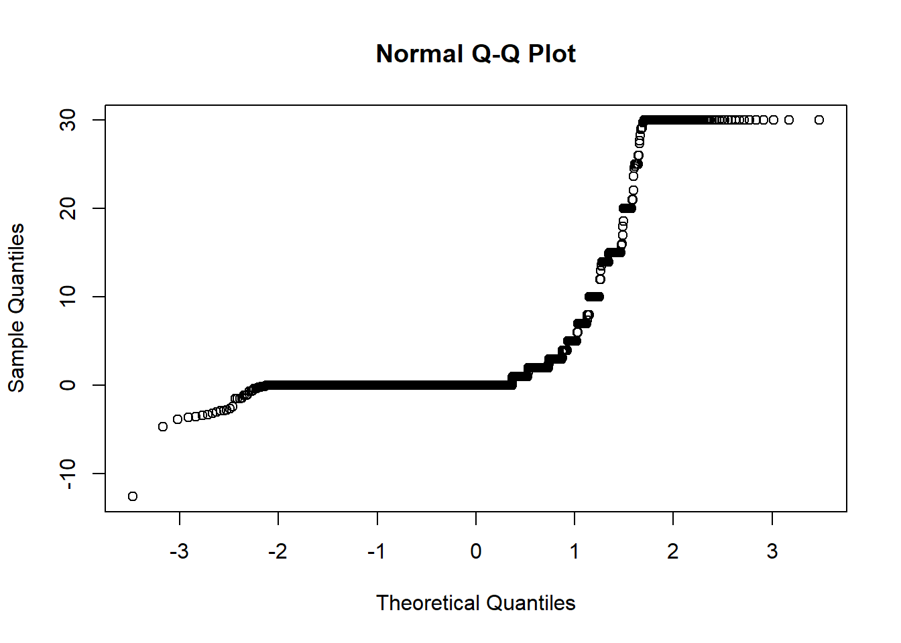

knitr::opts_chunk$set(comment = NA)
library(broom)
library(lmtest)
library(MASS)
library(pscl)
library(VGAM)
library(tidyverse)
theme_set(theme_bw())26 Zero-Inflated Models for Count Data
We will continue to use a count outcome (# of poor physical health days out of the last 30) in OHIO SMART data created in Chapter 6 to demonstrate regression models for count outcomes, as we did in Chapter 24 and Chapter 25.
Methods discussed in the chapter include:
- Zero-inflated Poisson Regression
- Zero-inflated Negative Binomial Regression
- Two different types of “hurdle” model
- A Tobit (Censored) Regression Model
26.1 R Setup Used Here
26.2 Data Load and Subset Creation
smart_oh <- readRDS("data/smart_ohio.Rds")As in Chapter 24 and Chapter 25, we’ll create a subset of these data for analysis.
ohioA <- smart_oh |>
select(SEQNO, mmsa_name, genhealth, physhealth,
menthealth, healthplan, costprob,
agegroup, female, incomegroup, bmi, smoke100,
alcdays) |>
drop_na()
ohioA_young <- ohioA |>
filter(agegroup %in% c("18-24", "25-29", "30-34",
"35-39", "40-44", "45-49")) |>
droplevels() |>
mutate(bmi_c = bmi - mean(bmi))26.3 Setup for this Chapter
Again, we’re going to predict physhealth using bmi_c and smoke100.
- Remember that
physhealthis a count of the number of poor physical health days in the past 30. - As a result,
physhealthis restricted to taking values between 0 and 30.
In this chapter, we demonstrate:
- Zero-inflated Poisson models
- Zero-inflated Negative Binomial models
- Hurdle models
- Tobit models
26.3.1 What Will We Demonstrate?
With each new approach, we again will fit the model and specify procedures for doing so in R. Then we will:
- Specify the fitted model equation
- Interpret the model’s coefficient estimates and 95% confidence intervals around those estimates.
- Perform a test of whether each variable adds value to the model, when the other one is already included.
- Store the fitted values and appropriate residuals for each model.
- Summarize the model’s apparent \(R^2\) value, the proportion of variation explained, and the model log likelihood.
- Perform checks of model assumptions as appropriate.
- Describe how predictions would be made for two new subjects.
- Harry has a BMI that is 10 kg/m2 higher than the average across all respondents and has smoked more than 100 cigarettes in his life.
- Sally has a BMI that is 5 kg/m2 less than the average across all respondents and has not smoked more than 100 cigarettes in her life.
In addition, for some of the new models, we provide a little of the mathematical background, and point to other resources you can use to learn more about the model.
26.3.2 Extra Data File for Harry and Sally
To make our lives a little easier, I’ll create a little tibble containing the necessary data for Harry and Sally.
hs_data <- tibble(subj = c("Harry", "Sally"),
bmi_c = c(10, -5),
smoke100 = c(1, 0))
hs_data# A tibble: 2 × 3
subj bmi_c smoke100
<chr> <dbl> <dbl>
1 Harry 10 1
2 Sally -5 026.3.3 Previous Models (for comparison)
mod_poiss1 <- glm(physhealth ~ bmi_c + smoke100,
family = poisson(),
data = ohioA_young)
mod_nb1 <- glm.nb(physhealth ~ bmi_c + smoke100,
link = log,
data = ohioA_young)26.4 The Zero-Inflated Poisson Regression Model
There are at least two ways to tackle the problem of not predicting enough 0 values.
- Fitting a model which deliberately inflates the number of zeros that are fitted
- Fitting a hurdle model
The zero-inflated Poisson or (ZIP) model is used to describe count data with an excess of zero counts1. The model posits that there are two processes involved:
- a logit model is used to predict excess zeros
- while a Poisson model is used to predict the counts, generally
The pscl package is used here, which can conflict with the countreg package we used to fit rootograms.
To run the zero-inflated Poisson model, we use the following:
mod_zip1 <- zeroinfl(physhealth ~ bmi_c + smoke100,
data = ohioA_young)
summary(mod_zip1)
Call:
zeroinfl(formula = physhealth ~ bmi_c + smoke100, data = ohioA_young)
Pearson residuals:
Min 1Q Median 3Q Max
-1.4389 -0.6987 -0.6138 -0.1947 9.3036
Count model coefficients (poisson with log link):
Estimate Std. Error z value Pr(>|z|)
(Intercept) 1.997594 0.018797 106.3 <2e-16 ***
bmi_c 0.018176 0.001398 13.0 <2e-16 ***
smoke100 0.393383 0.024889 15.8 <2e-16 ***
Zero-inflation model coefficients (binomial with logit link):
Estimate Std. Error z value Pr(>|z|)
(Intercept) 0.682427 0.062853 10.857 < 2e-16 ***
bmi_c -0.027731 0.006509 -4.260 2.04e-05 ***
smoke100 -0.237224 0.095318 -2.489 0.0128 *
---
Signif. codes: 0 '***' 0.001 '**' 0.01 '*' 0.05 '.' 0.1 ' ' 1
Number of iterations in BFGS optimization: 8
Log-likelihood: -5680 on 6 Dfconfint(mod_zip1) 2.5 % 97.5 %
count_(Intercept) 1.96075280 2.03443546
count_bmi_c 0.01543576 0.02091718
count_smoke100 0.34460096 0.44216461
zero_(Intercept) 0.55923725 0.80561744
zero_bmi_c -0.04048828 -0.01497359
zero_smoke100 -0.42404310 -0.05040515The output describes two separate regression models. Below the model call, we see information on a Poisson regression model. Then we see another block describing the inflation model.
Each predictor (bmi_c and smoke100) appears to be statistically significant in each part of the model.
26.4.1 Comparison to a null model
To show that this model fits better than the null model (the model with intercept only), we can compare them directly with a chi-squared test. Since we have two predictors in the full model, the degrees of freedom for this test is 2.
mod_zipnull <- pscl::zeroinfl(physhealth ~ 1,
data = ohioA_young)
summary(mod_zipnull)
Call:
pscl::zeroinfl(formula = physhealth ~ 1, data = ohioA_young)
Pearson residuals:
Min 1Q Median 3Q Max
-0.6934 -0.6934 -0.6934 -0.2779 5.5400
Count model coefficients (poisson with log link):
Estimate Std. Error z value Pr(>|z|)
(Intercept) 2.22764 0.01233 180.7 <2e-16 ***
Zero-inflation model coefficients (binomial with logit link):
Estimate Std. Error z value Pr(>|z|)
(Intercept) 0.5767 0.0469 12.29 <2e-16 ***
---
Signif. codes: 0 '***' 0.001 '**' 0.01 '*' 0.05 '.' 0.1 ' ' 1
Number of iterations in BFGS optimization: 2
Log-likelihood: -5908 on 2 Dfpchisq(2 * (logLik(mod_zip1) - logLik(mod_zipnull)), df = 2, lower.tail = FALSE)'log Lik.' 8.59676e-100 (df=6)26.4.2 Comparison to a Poisson Model with the Vuong test
vuong(mod_zip1, mod_poiss1)Vuong Non-Nested Hypothesis Test-Statistic:
(test-statistic is asymptotically distributed N(0,1) under the
null that the models are indistinguishible)
-------------------------------------------------------------
Vuong z-statistic H_A p-value
Raw 19.90843 model1 > model2 < 2.22e-16
AIC-corrected 19.89681 model1 > model2 < 2.22e-16
BIC-corrected 19.86434 model1 > model2 < 2.22e-16Certainly, the ZIP model is a significant improvement over the standard Poisson model, as the Vuong test reveals.
26.4.3 The Fitted Equation
The form of the model equation for a zero-inflated Poisson regression requires us to take two separate models into account. First we have a logistic regression model to predict the log odds of zero physhealth days. That takes care of the extra zeros. Then, to predict the number of physhealth days, we have a Poisson model, which may produce some additional zero count estimates.
26.4.4 Interpreting the Coefficients
We can exponentiate the logistic regression coefficients to obtain results in terms of odds ratios for that model, and that can be of some help in understanding the process behind excess zeros.
Also, exponentiating the coefficients of the count model help us describe those counts on the original scale of physhealth.
exp(coef(mod_zip1))count_(Intercept) count_bmi_c count_smoke100 zero_(Intercept)
7.3713003 1.0183427 1.4819856 1.9786748
zero_bmi_c zero_smoke100
0.9726500 0.7888145 For example,
- in the model for
physhealth= 0, the odds ofphyshealth= 0 are 79% as high for subjects withsmoke100= 1 as for non-smokers with the same BMI. - in the Poisson model for
physhealth, thephyshealthcount is estimated to increase by 1.48 for smokers as compared to non-smokers with the same BMI.
26.4.5 Testing the Predictors
We can test the model with and without bmi_c, for example, by fitting the model both ways, and comparing the results with either a Wald or Likelihood Ratio test, each of which is available in the lmtest package.
mod_zip1_nobmi <- zeroinfl(physhealth ~ smoke100,
data = ohioA_young)
lmtest::waldtest(mod_zip1, mod_zip1_nobmi)Wald test
Model 1: physhealth ~ bmi_c + smoke100
Model 2: physhealth ~ smoke100
Res.Df Df Chisq Pr(>Chisq)
1 1968
2 1970 -2 187.2 < 2.2e-16 ***
---
Signif. codes: 0 '***' 0.001 '**' 0.01 '*' 0.05 '.' 0.1 ' ' 1lmtest::lrtest(mod_zip1, mod_zip1_nobmi)Likelihood ratio test
Model 1: physhealth ~ bmi_c + smoke100
Model 2: physhealth ~ smoke100
#Df LogLik Df Chisq Pr(>Chisq)
1 6 -5679.8
2 4 -5769.5 -2 179.35 < 2.2e-16 ***
---
Signif. codes: 0 '***' 0.001 '**' 0.01 '*' 0.05 '.' 0.1 ' ' 126.4.6 Store fitted values and residuals
The broom package does not work with the zeroinfl tool. So we need to build up the fitted values and residuals ourselves.
sm_zip1 <- ohioA_young |>
mutate(fitted = fitted(mod_zip1, type = "response"),
resid = resid(mod_zip1, type = "response"))
sm_zip1 |>
dplyr::select(physhealth, fitted, resid) |>
head()# A tibble: 6 × 3
physhealth fitted resid
<dbl> <dbl> <dbl>
1 0 2.21 -2.21
2 0 2.28 -2.28
3 0 3.12 -3.12
4 30 5.27 24.7
5 0 3.17 -3.17
6 0 3.71 -3.7126.4.7 Modeled Number of Zero Counts
The zero-inflated model is designed to perfectly match the number of observed zeros. We can compare the observed number of zero physhealth results to the expected number of zero values from the likelihood-based models.
round(c("Obs" = sum(ohioA_young$physhealth == 0),
"Poisson" = sum(dpois(0, fitted(mod_poiss1))),
"NB" = sum(dnbinom(0, mu = fitted(mod_nb1), size = mod_nb1$theta)),
"ZIP" = sum(predict(mod_zip1, type = "prob")[,1])), 0) Obs Poisson NB ZIP
1264 124 1250 1264 26.4.8 Rootogram for ZIP model
Here’s the rootogram for the zero-inflated Poisson model.
countreg::rootogram(mod_zip1, max = 30)
The zero frequencies are perfectly matched here, but we can see that counts of 1 and 2 are now substantially underfit, and values between 6 and 13 are overfit.
26.4.9 Specify the \(R^2\) and log (likelihood) values
We can calculate a proxy for \(R^2\) as the squared correlation of the fitted values and the observed values.
# The correlation of observed and fitted values
(zip_r <- with(sm_zip1, cor(physhealth, fitted)))[1] 0.187328# R-square
zip_r^2[1] 0.03509178logLik(mod_zip1)'log Lik.' -5679.794 (df=6)Here, we have
| Model | Scale | \(R^2\) | log(likelihood) |
|---|---|---|---|
| Zero-Inflated Poisson | Complex: log(physhealth) |
.035 | -5679.83 |
26.4.10 Check model assumptions
Here is a plot of residuals vs. fitted values on the original physhealth scale.
ggplot(sm_zip1, aes(x = fitted, y = resid)) +
geom_point() +
labs(title = "Residuals vs. Fitted `physhealth`",
subtitle = "Zero-Inflated Poisson Regression model")26.4.11 Predictions for Harry and Sally
The predictions from this ZIP regression model are obtained as follows…
predict(mod_zip1, newdata = hs_data, type = "response") 1 2
6.002212 2.056525 As we’ve seen in the past, when we use response as the type, the predictions fall on the original physhealth scale. The prediction for Harry is 6.0 days, and for Sally is 2.1 days.
26.5 The Zero-Inflated Negative Binomial Regression Model
As an alternative to the ZIP model, we might consider a zero-inflated negative binomial regression2. This will involve a logistic regression to predict the probability of a 0, and then a negative binomial model to describe the counts of physhealth.
To run the zero-inflated negative binomial model, we use the following code:
mod_zinb1 <- pscl::zeroinfl(physhealth ~ bmi_c + smoke100,
dist = "negbin", data = ohioA_young)
summary(mod_zinb1)
Call:
pscl::zeroinfl(formula = physhealth ~ bmi_c + smoke100, data = ohioA_young,
dist = "negbin")
Pearson residuals:
Min 1Q Median 3Q Max
-0.5579 -0.4192 -0.3957 -0.1166 6.4358
Count model coefficients (negbin with log link):
Estimate Std. Error z value Pr(>|z|)
(Intercept) 1.545599 0.099781 15.490 < 2e-16 ***
bmi_c 0.024614 0.006641 3.707 0.00021 ***
smoke100 0.517559 0.110772 4.672 2.98e-06 ***
Log(theta) -0.874034 0.143876 -6.075 1.24e-09 ***
Zero-inflation model coefficients (binomial with logit link):
Estimate Std. Error z value Pr(>|z|)
(Intercept) -0.071629 0.164039 -0.437 0.66236
bmi_c -0.027607 0.009313 -2.964 0.00303 **
smoke100 -0.127004 0.137171 -0.926 0.35451
---
Signif. codes: 0 '***' 0.001 '**' 0.01 '*' 0.05 '.' 0.1 ' ' 1
Theta = 0.4173
Number of iterations in BFGS optimization: 14
Log-likelihood: -3469 on 7 Dfconfint(mod_zinb1) 2.5 % 97.5 %
count_(Intercept) 1.35003234 1.741165036
count_bmi_c 0.01159892 0.037629890
count_smoke100 0.30045008 0.734668671
zero_(Intercept) -0.39313901 0.249880357
zero_bmi_c -0.04585974 -0.009354261
zero_smoke100 -0.39585468 0.14184579026.5.1 Comparison to a null model
To show that this model fits better than the null model (the model with intercept only), we can compare them directly with a chi-squared test. Since we have two predictors in the full model, the degrees of freedom for this test is 2.
mod_zinbnull <- pscl::zeroinfl(physhealth ~ 1, dist = "negbin",
data = ohioA_young)
summary(mod_zinbnull)
Call:
pscl::zeroinfl(formula = physhealth ~ 1, data = ohioA_young, dist = "negbin")
Pearson residuals:
Min 1Q Median 3Q Max
-0.4048 -0.4048 -0.4048 -0.1622 3.2340
Count model coefficients (negbin with log link):
Estimate Std. Error z value Pr(>|z|)
(Intercept) 1.7766 0.0964 18.429 < 2e-16 ***
Log(theta) -1.0445 0.1612 -6.479 9.25e-11 ***
Zero-inflation model coefficients (binomial with logit link):
Estimate Std. Error z value Pr(>|z|)
(Intercept) -0.2605 0.1920 -1.357 0.175
---
Signif. codes: 0 '***' 0.001 '**' 0.01 '*' 0.05 '.' 0.1 ' ' 1
Theta = 0.3519
Number of iterations in BFGS optimization: 12
Log-likelihood: -3498 on 3 Dfpchisq(2 * (logLik(mod_nb1) - logLik(mod_zinbnull)), df = 2, lower.tail = FALSE)'log Lik.' 8.538917e-07 (df=4)26.5.2 Comparison to a Negative Binomial Model: Vuong test
vuong(mod_zinb1, mod_nb1)Vuong Non-Nested Hypothesis Test-Statistic:
(test-statistic is asymptotically distributed N(0,1) under the
null that the models are indistinguishible)
-------------------------------------------------------------
Vuong z-statistic H_A p-value
Raw 3.0753499 model1 > model2 0.0010513
AIC-corrected 2.4597116 model1 > model2 0.0069524
BIC-corrected 0.7396743 model1 > model2 0.2297488The zero-inflated negative binomial model is a significant improvement over the standard negative binomial model according to the the raw or AIC-corrected Vuong tests, but not according to the BIC-corrected test.
26.5.3 The Fitted Equation
Like the ZIP, the zero-inflated negative binomial regression also requires us to take two separate models into account. First we have a logistic regression model to predict the log odds of zero physhealth days. That takes care of the extra zeros. Then, to predict the number of physhealth days, we have a negative binomial regression, with a \(\theta\) term, and this negative binomial regression model may also produce some additional zero count estimates.
26.5.4 Interpreting the Coefficients
As with the zip, we can exponentiate the logistic regression coefficients to obtain results in terms of odds ratios for that model, and that can be of some help in understanding the process behind excess zeros.
exp(coef(mod_zinb1))count_(Intercept) count_bmi_c count_smoke100 zero_(Intercept)
4.6907791 1.0249198 1.6779275 0.9308759
zero_bmi_c zero_smoke100
0.9727706 0.8807298 For example,
- in the model for
physhealth= 0, the odds ofphyshealth= 0 are 88.1% as high for subjects withsmoke100= 1 as for non-smokers with the same BMI.
Interpreting the negative binomial piece works the same way as it did in the negative binomial regression.
26.5.5 Testing the Predictors
We can test the model with and without bmi_c, for example, by fitting the model both ways, and comparing the results with either a Wald or Likelihood Ratio test, each of which is available in the lmtest package.
mod_zinb1_nobmi <- pscl::zeroinfl(physhealth ~ smoke100,
dist = "negbin",
data = ohioA_young)
lmtest::waldtest(mod_zinb1, mod_zinb1_nobmi)Wald test
Model 1: physhealth ~ bmi_c + smoke100
Model 2: physhealth ~ smoke100
Res.Df Df Chisq Pr(>Chisq)
1 1967
2 1969 -2 29.589 3.757e-07 ***
---
Signif. codes: 0 '***' 0.001 '**' 0.01 '*' 0.05 '.' 0.1 ' ' 1lmtest::lrtest(mod_zinb1, mod_zinb1_nobmi)Likelihood ratio test
Model 1: physhealth ~ bmi_c + smoke100
Model 2: physhealth ~ smoke100
#Df LogLik Df Chisq Pr(>Chisq)
1 7 -3469.3
2 5 -3485.0 -2 31.418 1.506e-07 ***
---
Signif. codes: 0 '***' 0.001 '**' 0.01 '*' 0.05 '.' 0.1 ' ' 126.5.6 Store fitted values and residuals
Again, we need to build up the fitted values and residuals without the broom package.
sm_zinb1 <- ohioA_young |>
mutate(fitted = fitted(mod_zinb1, type = "response"),
resid = resid(mod_zinb1, type = "response"))
sm_zip1 |>
dplyr::select(physhealth, fitted, resid) |>
head()# A tibble: 6 × 3
physhealth fitted resid
<dbl> <dbl> <dbl>
1 0 2.21 -2.21
2 0 2.28 -2.28
3 0 3.12 -3.12
4 30 5.27 24.7
5 0 3.17 -3.17
6 0 3.71 -3.7126.5.7 Modeled Number of Zero Counts
Once again, we can compare the observed number of zero physhealth results to the expected number of zero values from the likelihood-based models.
round(c("Obs" = sum(ohioA_young$physhealth == 0),
"Poisson" = sum(dpois(0, fitted(mod_poiss1))),
"NB" = sum(dnbinom(0, mu = fitted(mod_nb1), size = mod_nb1$theta)),
"ZIP" = sum(predict(mod_zip1, type = "prob")[,1]),
"ZINB" = sum(predict(mod_zinb1, type = "prob")[,1])),0) Obs Poisson NB ZIP ZINB
1264 124 1250 1264 1264 So, the Poisson model is clearly inappropriate, but the zero-inflated (Poisson and NB) and the negative binomial model all give reasonable fits in this regard.
26.5.8 Rootogram for Zero-Inflated Negative Binomial model
Here’s the rootogram for the zero-inflated negative binomial model.
countreg::rootogram(mod_zinb1, max = 30)As in the ZIP model, the zero frequencies are perfectly matched here, but we can see that counts of 1 and 2 are now closer to the data we observe than in the ZIP model. We are still substantially underfitting values of 30.
26.5.9 Specify the \(R^2\) and log (likelihood) values
We can calculate a proxy for \(R^2\) as the squared correlation of the fitted values and the observed values.
# The correlation of observed and fitted values
(zinb_r <- with(sm_zinb1, cor(physhealth, fitted)))[1] 0.1858969# R-square
zinb_r^2[1] 0.03455767logLik(mod_zinb1)'log Lik.' -3469.29 (df=7)Here, we have
| Model | Scale | \(R^2\) | log(likelihood) |
|---|---|---|---|
| Zero-Inflated Negative Binomial | Complex: log(physhealth) |
.035 | -3469.27 |
26.5.10 Check model assumptions
Here is a plot of residuals vs. fitted values on the original physhealth scale.
ggplot(sm_zinb1, aes(x = fitted, y = resid)) +
geom_point() +
labs(title = "Residuals vs. Fitted `physhealth`",
subtitle = "Zero-Inflated Negative Binomial Regression model")26.5.11 Predictions for Harry and Sally
The predictions from this zero-inflated negative binomial regression model are obtained as follows…
predict(mod_zinb1, newdata = hs_data, type = "response") 1 2
6.206514 2.004963 As we’ve seen in the past, when we use response as the type, the predictions fall on the original physhealth scale. The prediction for Harry is 6.2 days, and for Sally is 2.0 days.
26.6 A “hurdle” model (with Poisson)
Much of the discussion here of hurdle models comes from Clay Ford at the University of Virginia3. Ford describes a hurdle model as follows:
The hurdle model is a two-part model that specifies one process for zero counts and another process for positive counts. The idea is that positive counts occur once a threshold is crossed, or put another way, a hurdle is cleared. If the hurdle is not cleared, then we have a count of 0.
The first part of the model is typically a binary logit model. This models whether an observation takes a positive count or not. The second part of the model is usually a truncated Poisson or Negative Binomial model. Truncated means we’re only fitting positive counts. If we were to fit a hurdle model to our [medicare] data, the interpretation would be that one process governs whether a patient visits a doctor or not, and another process governs how many visits are made.
To fit a hurdle model, we’ll use the hurdle function in the pscl package.
mod_hur1 <- pscl::hurdle(physhealth ~ bmi_c + smoke100,
dist = "poisson", zero.dist = "binomial",
data = ohioA_young)
summary(mod_hur1)
Call:
pscl::hurdle(formula = physhealth ~ bmi_c + smoke100, data = ohioA_young,
dist = "poisson", zero.dist = "binomial")
Pearson residuals:
Min 1Q Median 3Q Max
-1.4403 -0.6987 -0.6139 -0.1946 9.2997
Count model coefficients (truncated poisson with log link):
Estimate Std. Error z value Pr(>|z|)
(Intercept) 1.997612 0.018797 106.3 <2e-16 ***
bmi_c 0.018178 0.001398 13.0 <2e-16 ***
smoke100 0.393348 0.024889 15.8 <2e-16 ***
Zero hurdle model coefficients (binomial with logit link):
Estimate Std. Error z value Pr(>|z|)
(Intercept) -0.683509 0.062827 -10.879 < 2e-16 ***
bmi_c 0.027777 0.006508 4.268 1.97e-05 ***
smoke100 0.238300 0.095301 2.500 0.0124 *
---
Signif. codes: 0 '***' 0.001 '**' 0.01 '*' 0.05 '.' 0.1 ' ' 1
Number of iterations in BFGS optimization: 14
Log-likelihood: -5680 on 6 Dfconfint(mod_hur1) 2.5 % 97.5 %
count_(Intercept) 1.96077105 2.03445261
count_bmi_c 0.01543722 0.02091901
count_smoke100 0.34456599 0.44212932
zero_(Intercept) -0.80664805 -0.56037031
zero_bmi_c 0.01502124 0.04053230
zero_smoke100 0.05151314 0.42508607We are using the default settings here, using the same predictors for both models:
- a Binomial model to predict the probability of
physhealth= 0 given our predictors, as specified by thezero.distargument in thehurdlefunction, and - a (truncated) Poisson model to predict the positive-count of
physhealthgiven those same predictors, as specified by thedistargument in thehurdlefunction.
26.6.1 Comparison to a null model
To show that this model fits better than the null model (the model with intercept only), we can compare them directly with a chi-squared test. Since we have two predictors in the full model, the degrees of freedom for this test is 2.
mod_hurnull <- pscl::hurdle(physhealth ~ 1, dist = "poisson",
zero.dist = "binomial",
data = ohioA_young)
summary(mod_hurnull)
Call:
pscl::hurdle(formula = physhealth ~ 1, data = ohioA_young, dist = "poisson",
zero.dist = "binomial")
Pearson residuals:
Min 1Q Median 3Q Max
-0.6934 -0.6934 -0.6934 -0.2779 5.5399
Count model coefficients (truncated poisson with log link):
Estimate Std. Error z value Pr(>|z|)
(Intercept) 2.22765 0.01233 180.7 <2e-16 ***
Zero hurdle model coefficients (binomial with logit link):
Estimate Std. Error z value Pr(>|z|)
(Intercept) -0.5768 0.0469 -12.3 <2e-16 ***
---
Signif. codes: 0 '***' 0.001 '**' 0.01 '*' 0.05 '.' 0.1 ' ' 1
Number of iterations in BFGS optimization: 8
Log-likelihood: -5908 on 2 Dfpchisq(2 * (logLik(mod_hur1) - logLik(mod_hurnull)), df = 2, lower.tail = FALSE)'log Lik.' 8.577393e-100 (df=6)26.6.2 Comparison to a Poisson Model: Vuong test
vuong(mod_hur1, mod_poiss1)Vuong Non-Nested Hypothesis Test-Statistic:
(test-statistic is asymptotically distributed N(0,1) under the
null that the models are indistinguishible)
-------------------------------------------------------------
Vuong z-statistic H_A p-value
Raw 19.90847 model1 > model2 < 2.22e-16
AIC-corrected 19.89685 model1 > model2 < 2.22e-16
BIC-corrected 19.86438 model1 > model2 < 2.22e-16The hurdle model shows a detectable improvement over the standard Poisson model according to this test.
26.6.3 Comparison to a Zero-Inflated Poisson Model: Vuong test
Is the hurdle model comparable to the zero-inflated Poisson?
vuong(mod_hur1, mod_zip1)Vuong Non-Nested Hypothesis Test-Statistic:
(test-statistic is asymptotically distributed N(0,1) under the
null that the models are indistinguishible)
-------------------------------------------------------------
Vuong z-statistic H_A p-value
Raw 0.2046181 model1 > model2 0.41894
AIC-corrected 0.2046181 model1 > model2 0.41894
BIC-corrected 0.2046181 model1 > model2 0.41894The hurdle model doesn’t show a substantial improvement over the zero-inflated Poisson model according to this test.
26.6.4 The Fitted Equation
The form of the model equation for this hurdle also requires us to take two separate models into account. First we have a logistic regression model to predict the log odds of zero physhealth days. That takes care of the zeros. Then, to predict the number of physhealth days, we use a truncated Poisson model, which is truncated to produce only estimates greater than zero.
26.6.5 Interpreting the Coefficients
We can exponentiate the logistic regression coefficients to obtain results in terms of odds ratios for that model, and that can be of some help in understanding the process behind excess zeros.
Also, exponentiating the coefficients of the count model help us describe those counts on the original scale of physhealth.
exp(coef(mod_hur1))count_(Intercept) count_bmi_c count_smoke100 zero_(Intercept)
7.3714308 1.0183443 1.4819335 0.5048423
zero_bmi_c zero_smoke100
1.0281661 1.2690894 For example,
- in the model for
physhealth= 0, the odds ofphyshealth= 0 are 127% as high for subjects withsmoke100= 1 as for non-smokers with the same BMI. - in the Poisson model for
physhealth, thephyshealthcount is estimated to increase by 1.48 for smokers as compared to non-smokers with the same BMI.
26.6.6 Testing the Predictors
We can test the model with and without bmi_c, for example, by fitting the model both ways, and comparing the results with either a Wald or Likelihood Ratio test, each of which is available in the lmtest package.
mod_hur1_nobmi <- pscl::hurdle(physhealth ~ smoke100,
dist = "poisson",
zero.dist = "binomial",
data = ohioA_young)
lmtest::waldtest(mod_hur1, mod_hur1_nobmi)Wald test
Model 1: physhealth ~ bmi_c + smoke100
Model 2: physhealth ~ smoke100
Res.Df Df Chisq Pr(>Chisq)
1 1968
2 1970 -2 187.19 < 2.2e-16 ***
---
Signif. codes: 0 '***' 0.001 '**' 0.01 '*' 0.05 '.' 0.1 ' ' 1lmtest::lrtest(mod_hur1, mod_hur1_nobmi)Likelihood ratio test
Model 1: physhealth ~ bmi_c + smoke100
Model 2: physhealth ~ smoke100
#Df LogLik Df Chisq Pr(>Chisq)
1 6 -5679.8
2 4 -5769.5 -2 179.35 < 2.2e-16 ***
---
Signif. codes: 0 '***' 0.001 '**' 0.01 '*' 0.05 '.' 0.1 ' ' 126.6.7 Store fitted values and residuals
The broom package does not work with the hurdle class of models. Again we need to build up the fitted values and residuals ourselves.
sm_hur1 <- ohioA_young |>
mutate(fitted = fitted(mod_hur1, type = "response"),
resid = resid(mod_hur1, type = "response"))
sm_hur1 |>
dplyr::select(physhealth, fitted, resid) |>
head()# A tibble: 6 × 3
physhealth fitted resid
<dbl> <dbl> <dbl>
1 0 2.21 -2.21
2 0 2.28 -2.28
3 0 3.12 -3.12
4 30 5.27 24.7
5 0 3.17 -3.17
6 0 3.71 -3.7126.6.8 Modeled Number of Zero Counts
Once again, we can compare the observed number of zero physhealth results to the expected number of zero values from the likelihood-based models.
round(c("Obs" = sum(ohioA_young$physhealth == 0),
"Poisson" = sum(dpois(0, fitted(mod_poiss1))),
"NB" = sum(dnbinom(0, mu = fitted(mod_nb1), size = mod_nb1$theta)),
"ZIP" = sum(predict(mod_zip1, type = "prob")[,1]),
"ZINB" = sum(predict(mod_zinb1, type = "prob")[,1]),
"Hurdle" = sum(predict(mod_hur1, type = "prob")[,1])),0) Obs Poisson NB ZIP ZINB Hurdle
1264 124 1250 1264 1264 1264 The hurdle model does about as well as the negative binomial and zero-inflated models. All but the Poisson give reasonable fits in this regard.
26.6.9 Rootogram for Hurdle Model
countreg::rootogram(mod_hur1, max = 30)
The results are still not perfect, of course. In fitting the zeros exactly, we’re underfitting counts of 1, 2, and 30, and overfitting many of the counts between 6 and 20. We still have a problem here with overdispersion. That’s why we’ll consider a hurdle model with a negative binomial regression for the counts in a moment.
26.6.10 Understanding the Modeled Counts in Detail
The expected mean count uses both parts of the hurdle model. Mathematically, we want…
\[ E[y | x] = \frac{1 - f_1(0 | x)}{1 - f_2(0 | x)} \mu_2(x) \]
where
- our count of
physhealthis \(y\) - our predictors are represented by x
- and the expected count is the product of a ratio and a mean.
The ratio is the probability of a non-zero in the first process divided the probability of a non-zero in the second untruncated process. The f symbols represent distributions. Recall these are logistic and Poisson, respectively, by default but can be others. The mean is for the untruncated version of the positive-count process.
If we want to see the expected hurdle counts, we can get them using some clever applications of the predict function.
The first six expected mean counts (\(E[y | x]\) from the equation above) are:
head(predict(mod_hur1, type = "response")) 1 2 3 4 5 6
2.214179 2.281482 3.116124 5.267881 3.167890 3.712120 The ratio of non-zero probabilities, \(\frac{1 - f_1(0 | x)}{1 - f_2(0 | x)}\), from the mathematical expression above can be extracted by:
head(predict(mod_hur1, type = "zero")) 1 2 3 4 5 6
0.3173312 0.3221978 0.3344433 0.4806542 0.3372292 0.3649208 The mean for the untruncated process, \(\mu_2(x)\), can also be obtained by:
head(predict(mod_hur1, type = "count")) 1 2 3 4 5 6
6.977501 7.081000 9.317347 10.959814 9.393877 10.172401 and we can multiply these last two pieces together to verify that they match our expected hurdle counts.
head(predict(mod_hur1, type = "zero") * predict(mod_hur1, type = "count"),5) 1 2 3 4 5
2.214179 2.281482 3.116124 5.267881 3.167890 26.6.11 Specify the \(R^2\) and log (likelihood) values
We can calculate a proxy for \(R^2\) as the squared correlation of the fitted values and the observed values.
# The correlation of observed and fitted values
(hur1_r <- with(sm_hur1, cor(physhealth, fitted)))[1] 0.1873104# R-square
hur1_r^2[1] 0.03508517logLik(mod_hur1)'log Lik.' -5679.792 (df=6)Here, we have
| Model | Scale | \(R^2\) | log(likelihood) |
|---|---|---|---|
| Hurdle Model (Poisson) | Complex: log(physhealth) |
.035 | -5679.83 |
26.6.12 Check model assumptions
Here is a plot of residuals vs. fitted values on the original physhealth scale.
ggplot(sm_hur1, aes(x = fitted, y = resid)) +
geom_point() +
labs(title = "Residuals vs. Fitted `physhealth`",
subtitle = "Hurdle model with Poisson counts")
26.6.13 Predictions for Harry and Sally
The predictions from this zero-inflated negative binomial regression model are obtained as follows…
predict(mod_hur1, newdata = hs_data, type = "response") 1 2
6.003689 2.057127 As we’ve seen in the past, when we use response as the type, the predictions fall on the original physhealth scale. The prediction for Harry is 6.0 days, and for Sally is 2.1 days.
26.7 A “hurdle” model (with negative binomial for overdispersion)
Let’s account for overdispersion better with a negative binomial model for the counts in our hurdle model. We specify that the positive-count process be fit with this NB model using dist = negbin.
mod_hur_nb1 <- pscl::hurdle(physhealth ~ bmi_c + smoke100,
dist = "negbin", zero.dist = "binomial",
data = ohioA_young)
summary(mod_hur_nb1)
Call:
pscl::hurdle(formula = physhealth ~ bmi_c + smoke100, data = ohioA_young,
dist = "negbin", zero.dist = "binomial")
Pearson residuals:
Min 1Q Median 3Q Max
-0.5749 -0.4178 -0.3948 -0.1165 6.4023
Count model coefficients (truncated negbin with log link):
Estimate Std. Error z value Pr(>|z|)
(Intercept) 1.54170 0.10101 15.263 < 2e-16 ***
bmi_c 0.02434 0.00677 3.595 0.000324 ***
smoke100 0.51792 0.11101 4.666 3.08e-06 ***
Log(theta) -0.88245 0.14653 -6.023 1.72e-09 ***
Zero hurdle model coefficients (binomial with logit link):
Estimate Std. Error z value Pr(>|z|)
(Intercept) -0.683509 0.062827 -10.879 < 2e-16 ***
bmi_c 0.027777 0.006508 4.268 1.97e-05 ***
smoke100 0.238300 0.095301 2.500 0.0124 *
---
Signif. codes: 0 '***' 0.001 '**' 0.01 '*' 0.05 '.' 0.1 ' ' 1
Theta: count = 0.4138
Number of iterations in BFGS optimization: 17
Log-likelihood: -3469 on 7 Dfconfint(mod_hur_nb1) 2.5 % 97.5 %
count_(Intercept) 1.34373051 1.73966938
count_bmi_c 0.01107002 0.03760871
count_smoke100 0.30035006 0.73549531
zero_(Intercept) -0.80664805 -0.56037031
zero_bmi_c 0.01502124 0.04053230
zero_smoke100 0.05151314 0.4250860726.7.1 Comparison to a null model
To show that this model fits better than the null model (the model with intercept only), we can compare them directly with a chi-squared test. Since we have two predictors in the full model, the degrees of freedom for this test is 2.
mod_hur_nb_null <- pscl::hurdle(physhealth ~ 1, dist = "negbin",
zero.dist = "binomial",
data = ohioA_young)
summary(mod_hur_nb_null)
Call:
pscl::hurdle(formula = physhealth ~ 1, data = ohioA_young, dist = "negbin",
zero.dist = "binomial")
Pearson residuals:
Min 1Q Median 3Q Max
-0.4048 -0.4048 -0.4048 -0.1622 3.2340
Count model coefficients (truncated negbin with log link):
Estimate Std. Error z value Pr(>|z|)
(Intercept) 1.77653 0.09641 18.427 < 2e-16 ***
Log(theta) -1.04455 0.16123 -6.479 9.25e-11 ***
Zero hurdle model coefficients (binomial with logit link):
Estimate Std. Error z value Pr(>|z|)
(Intercept) -0.5768 0.0469 -12.3 <2e-16 ***
---
Signif. codes: 0 '***' 0.001 '**' 0.01 '*' 0.05 '.' 0.1 ' ' 1
Theta: count = 0.3518
Number of iterations in BFGS optimization: 12
Log-likelihood: -3498 on 3 Dfpchisq(2 * (logLik(mod_hur_nb1) - logLik(mod_hur_nb_null)), df = 2, lower.tail = FALSE)'log Lik.' 2.17419e-13 (df=7)26.7.2 Comparison to a Negative Binomial Model: Vuong test
vuong(mod_hur_nb1, mod_nb1)Vuong Non-Nested Hypothesis Test-Statistic:
(test-statistic is asymptotically distributed N(0,1) under the
null that the models are indistinguishible)
-------------------------------------------------------------
Vuong z-statistic H_A p-value
Raw 3.0953118 model1 > model2 0.00098303
AIC-corrected 2.4837306 model1 > model2 0.00650071
BIC-corrected 0.7750288 model1 > model2 0.21916133The hurdle model is a significant improvement over the standard negative binomial model according to the raw and AIC-corrected versions of this test, but not the BIC-corrected version.
26.7.3 Comparison to a Zero-Inflated NB Model: Vuong test
Is the hurdle model comparable to the zero-inflated Poisson?
vuong(mod_hur_nb1, mod_zinb1)Vuong Non-Nested Hypothesis Test-Statistic:
(test-statistic is asymptotically distributed N(0,1) under the
null that the models are indistinguishible)
-------------------------------------------------------------
Vuong z-statistic H_A p-value
Raw 0.91178 model1 > model2 0.18094
AIC-corrected 0.91178 model1 > model2 0.18094
BIC-corrected 0.91178 model1 > model2 0.18094The hurdle model is just barely a significant improvement over the zero-inflated Negative Binomial model.
26.7.4 Comparing the Hurdle Models with AIC and BIC
AIC(mod_hur1); BIC(mod_hur1)[1] 11371.58[1] 11405.11AIC(mod_hur_nb1); BIC(mod_hur_nb1)[1] 6952.186[1] 6991.301The negative binomial approach certainly looks better than the Poisson here.
26.7.5 The Fitted Equation
The form of the model equation for this hurdle also requires us to take two separate models into account. First we have a logistic regression model to predict the log odds of zero physhealth days. That takes care of the zeros. Then, to predict the number of physhealth days, we use a truncated negative binomial model, which is truncated to produce only estimates greater than zero, with \(\theta\) estimated as exp(-1.123) or 0.325.
26.7.6 Interpreting the Coefficients
We can exponentiate the logistic regression coefficients to obtain results in terms of odds ratios for that model, and that can be of some help in understanding the process behind excess zeros.
exp(coef(mod_hur_nb1))count_(Intercept) count_bmi_c count_smoke100 zero_(Intercept)
4.6725266 1.0246380 1.6785372 0.5048423
zero_bmi_c zero_smoke100
1.0281661 1.2690894 For example,
- in the model for
physhealth= 0, the odds ofphyshealth= 0 are 127% as high for subjects withsmoke100= 1 as for non-smokers with the same BMI.
26.7.7 Testing the Predictors
We can test the model with and without bmi_c, for example, by fitting the model both ways, and comparing the results with either a Wald or Likelihood Ratio test, each of which is available in the lmtest package.
mod_hurnb1_nobmi <- pscl::hurdle(physhealth ~ smoke100,
dist = "negbin",
zero.dist = "binomial",
data = ohioA_young)
lmtest::waldtest(mod_hur_nb1, mod_hurnb1_nobmi)Wald test
Model 1: physhealth ~ bmi_c + smoke100
Model 2: physhealth ~ smoke100
Res.Df Df Chisq Pr(>Chisq)
1 1967
2 1969 -2 31.141 1.729e-07 ***
---
Signif. codes: 0 '***' 0.001 '**' 0.01 '*' 0.05 '.' 0.1 ' ' 1lmtest::lrtest(mod_hur_nb1, mod_hurnb1_nobmi)Likelihood ratio test
Model 1: physhealth ~ bmi_c + smoke100
Model 2: physhealth ~ smoke100
#Df LogLik Df Chisq Pr(>Chisq)
1 7 -3469.1
2 5 -3485.0 -2 31.812 1.236e-07 ***
---
Signif. codes: 0 '***' 0.001 '**' 0.01 '*' 0.05 '.' 0.1 ' ' 126.7.8 Store fitted values and residuals
Again we need to build up the fitted values and residuals, without broom to help.
sm_hur_nb1 <- ohioA_young |>
mutate(fitted = fitted(mod_hur_nb1, type = "response"),
resid = resid(mod_hur_nb1, type = "response"))
sm_hur_nb1 |>
dplyr::select(physhealth, fitted, resid) |>
head()# A tibble: 6 × 3
physhealth fitted resid
<dbl> <dbl> <dbl>
1 0 2.16 -2.16
2 0 2.23 -2.23
3 0 3.09 -3.09
4 30 5.37 24.6
5 0 3.15 -3.15
6 0 3.72 -3.7226.7.9 Rootogram for NB Hurdle Model
countreg::rootogram(mod_hur_nb1, max = 30)This improves the situation, but we’re still underfitting the 30s.
26.7.10 Specify the \(R^2\) and log (likelihood) values
We can calculate a proxy for \(R^2\) as the squared correlation of the fitted values and the observed values.
# The correlation of observed and fitted values
(hurnb1_r <- with(sm_hur_nb1, cor(physhealth, fitted)))[1] 0.1856393# R-square
hurnb1_r^2[1] 0.03446194logLik(mod_hur_nb1)'log Lik.' -3469.093 (df=7)Here, we have
| Model | Scale | \(R^2\) | log(likelihood) |
|---|---|---|---|
| Hurdle Model (Neg. Bin.) | Complex: log(physhealth) |
.035 | -3469.07 |
26.7.11 Check model assumptions
Here is a plot of residuals vs. fitted values on the original physhealth scale.
ggplot(sm_hur_nb1, aes(x = fitted, y = resid)) +
geom_point() +
labs(title = "Residuals vs. Fitted `physhealth`",
subtitle = "Hurdle model with Negative Binomial counts")
26.7.12 Predictions for Harry and Sally
The predictions from this zero-inflated negative binomial regression model are obtained as follows…
predict(mod_hur_nb1, newdata = hs_data, type = "response") 1 2
6.222041 2.007095 The prediction for Harry is 6.22 days, and for Sally is 2.01 days.
26.7.13 Note: Fitting a Different Hurdle Model for Counts and Pr(zero)
Suppose we wanted to use only bmi_c to predict the probability of a zero count, but use both predictors in the model for the positive counts. We use the | command.
mod_hur_new1 <-
pscl::hurdle(physhealth ~ bmi_c + smoke100 | bmi_c,
dist = "negbin", zero.dist = "binomial",
data = ohioA_young)
summary(mod_hur_new1)
Call:
pscl::hurdle(formula = physhealth ~ bmi_c + smoke100 | bmi_c, data = ohioA_young,
dist = "negbin", zero.dist = "binomial")
Pearson residuals:
Min 1Q Median 3Q Max
-0.5630 -0.4179 -0.3971 -0.1150 6.1958
Count model coefficients (truncated negbin with log link):
Estimate Std. Error z value Pr(>|z|)
(Intercept) 1.54170 0.10101 15.263 < 2e-16 ***
bmi_c 0.02434 0.00677 3.595 0.000324 ***
smoke100 0.51792 0.11101 4.666 3.08e-06 ***
Log(theta) -0.88245 0.14653 -6.023 1.72e-09 ***
Zero hurdle model coefficients (binomial with logit link):
Estimate Std. Error z value Pr(>|z|)
(Intercept) -0.58186 0.04718 -12.332 < 2e-16 ***
bmi_c 0.02853 0.00649 4.396 1.1e-05 ***
---
Signif. codes: 0 '***' 0.001 '**' 0.01 '*' 0.05 '.' 0.1 ' ' 1
Theta: count = 0.4138
Number of iterations in BFGS optimization: 17
Log-likelihood: -3472 on 6 Df26.7.14 Hanging Rootogram for this new Hurdle Model
countreg::rootogram(mod_hur_new1, max = 30)
Not a meaningful improvement, certainly.
26.8 A Tobit (Censored) Regression Model
The idea of the tobit model (sometimes called a censored regression model) is to estimate associations for outcomes where we can see either left-censoring (censoring from below) or right-censoring (censoring from above.)
Consider the variable physhealth, which is restricted to fall between 0 and 30 by the way the measure was constructed. But supposed we think about a broader and latent (unobserved) variable describing physical health. Among the people with physhealth = 0, some would be incredible athletes and others would be in much poorer physical health but still healthy enough to truthfully answer 0. On the other end, some of the people responding 30 are in substantially worse physical health than others with that same response.
- Censoring from below takes place when values at or below a threshold (in this case 0) take that value.
- Censoring from above takes place when values at or above a threshold (here, 30) take that value.
Several examples of tobit analysis are available at https://stats.idre.ucla.edu/r/dae/tobit-models/, which is my primary source for the material here on those models.
The tobit model postulates that the value 0 in our model is just the lower limit of the underlying measure of poor physical health that we would actually observe in the population if we had a stronger measure. Similarly, we’ll postulate that 30 is just the upper limit of “poor health” that we can see. The approach I’ll take to run the tobit model comes from the vglm function in the VGAM package.
Here’s the model, and its summary. Note that the default Lower value for a tobit model is 0, so we didn’t technically have to list that here.
mod_tob1 <- vglm(physhealth ~ bmi_c + smoke100,
tobit(Lower = 0, Upper = 30),
type.fitted = "censored",
data = ohioA_young)
summary(mod_tob1)
Call:
vglm(formula = physhealth ~ bmi_c + smoke100, family = tobit(Lower = 0,
Upper = 30), data = ohioA_young, type.fitted = "censored")
Coefficients:
Estimate Std. Error z value Pr(>|z|)
(Intercept):1 -9.29104 0.75509 -12.305 < 2e-16 ***
(Intercept):2 2.87081 0.03028 94.818 < 2e-16 ***
bmi_c 0.37434 0.06537 5.727 1.02e-08 ***
smoke100 4.35390 0.97223 4.478 7.52e-06 ***
---
Signif. codes: 0 '***' 0.001 '**' 0.01 '*' 0.05 '.' 0.1 ' ' 1
Names of linear predictors: mu, loglink(sd)
Log-likelihood: -3420.605 on 3944 degrees of freedom
Number of Fisher scoring iterations: 6
No Hauck-Donner effect found in any of the estimatesconfint(mod_tob1) 2.5 % 97.5 %
(Intercept):1 -10.7709932 -7.8110877
(Intercept):2 2.8114721 2.9301560
bmi_c 0.2462244 0.5024551
smoke100 2.4483714 6.259427726.8.1 The Fitted Equation
Because we’ve used the censoring approach, our model will limit its predictions to the range of [0, 30], where any predictions outside that range are censored. Values below 0 are fitted as 0, and values above 30 are fitted as 30.
The model equation is
physhealth = -9.29 + 0.37 bmi_c + 4.35 smoke10026.8.2 Interpreting the Coefficients
Tobit model regression coefficients are interpreted as we would a set of OLS coefficients, except that the linear effect is on the uncensored latent variable, rather than on the observed outcome.
In our case,
- a one-unit increase in
bmi_cis associated with a 0.37 day increase in the predicted value ofphyshealth, holdingsmoke100constant - a move from
smoke100= 0 to 1 is associated with a 4.35 day increase in the predicted value ofphyshealth, holdingbmi_cconstant - the coefficient labeled
(Intercept):1is the intercept for the model and is the predicted value ofphyshealthwhensmoke100= 0 andbmi_c= 0. Note that this value is -9.29, which is outside the range ofphyshealthvalues we observed. - the coefficient labeled
(Intercept):2is a statistic we can use after we exponentiate it, as follows:- here
(Intercept):2= 2.87, and exp(2.87) = 17.6370182, which is analogous to the square root of the residual variance in OLS regression, which is summarized for our OLS model asResidual standard error: 17.64.
- here
26.8.3 Testing the Predictors
We can test the model with and without bmi_c, for example, by fitting the model both ways, and comparing the results with either a Wald or Likelihood Ratio test, each of which is available in the lmtest package.
mod_tob_nobmi <- vglm(physhealth ~ smoke100,
tobit(Lower = 0, Upper = 30),
type.fitted = "censored",
data = ohioA_young)
lmtest::waldtest(mod_tob1, mod_tob_nobmi)Wald test
Model 1: physhealth ~ bmi_c + smoke100
Model 2: physhealth ~ smoke100
Res.Df Df Chisq Pr(>Chisq)
1 3944
2 3945 -1 32.796 1.023e-08 ***
---
Signif. codes: 0 '***' 0.001 '**' 0.01 '*' 0.05 '.' 0.1 ' ' 1The likelihood ratio test we have used in some other settings isn’t available here.
26.8.4 Store fitted values and residuals
The residuals and fitted values from the tobit model can be stored and then summarized in several ways:
sm_tob1 <- ohioA_young |>
mutate(fitted = fitted(mod_tob1,
type.fitted = "censored"),
resid = physhealth - fitted)
sm_tob1 |>
dplyr::select(physhealth, fitted, resid) |>
head()# A tibble: 6 × 3
physhealth fitted[,1] resid[,1]
<dbl> <dbl> <dbl>
1 0 0 0
2 0 0 0
3 0 0 0
4 30 0 30
5 0 0 0
6 0 0 026.8.5 Building Something Like a Rootogram
Building a rootogram is tricky for a tobit model, to say the least, but we can approximate a piece of the issue by plotting the rounded fitted values against the observed physhealth data.
ggplot(sm_tob1, aes(x = physhealth, y = round(fitted))) +
geom_jitter(width = 0.2) +
geom_abline(intercept = 0, slope = 1, col = "red")
Note that the model never predicts a subject to have an underlying physhealth worse than about 13 (remember that larger numbers indicate worse health here.)
26.8.6 Tables of the Observed and Fitted physhealth from Tobit
addmargins(table(round(sm_tob1$physhealth)))
0 1 2 3 4 5 6 7 8 10 12 13 14 15 16 17
1264 112 139 78 29 50 5 40 9 41 4 1 24 38 2 1
18 20 21 25 26 28 29 30 Sum
1 23 3 8 2 1 1 98 1974 addmargins(table(round(sm_tob1$fitted)))
0 1 2 3 4 5 6 8 13 Sum
1924 20 7 10 4 6 1 1 1 1974 26.8.7 Specify the \(R^2\) and log (likelihood) values
We can calculate a proxy for \(R^2\) as the squared correlation of the fitted values and the observed values.
# The correlation of observed and fitted values
(tob1_r <- with(sm_tob1, cor(physhealth, fitted))) [,1]
[1,] 0.09329619# R-square
tob1_r^2 [,1]
[1,] 0.008704178logLik(mod_tob1)[1] -3420.605Here, we have
| Model | Scale | \(R^2\) | log(likelihood) |
|---|---|---|---|
| Tobit | physhealth |
.008 | -3420.58 |
26.8.8 Check model assumptions
Here is a plot of residuals vs. fitted values.
ggplot(sm_tob1, aes(x = fitted, y = resid)) +
geom_point() +
labs(title = "Residuals vs. Fitted Values for Tobit 1")
Here is a normal Q-Q plot of the Tobit Model 1 residuals.
qqnorm(sm_tob1$resid)
26.8.9 Predictions for Harry and Sally
The predictions from this tobit model are obtained as follows…
predict(mod_tob1, newdata = hs_data, type = "response") [,1]
1 -1.193743
2 -11.162739The prediction for both Harry and Sally under the tobit model would be truncated to 0 days.
See https://stats.idre.ucla.edu/r/dae/zip/ for more on the zero-inflated poisson model.↩︎
See https://stats.idre.ucla.edu/r/dae/zinb/↩︎
http://data.library.virginia.edu/getting-started-with-hurdle-models/ is an excellent introduction, by Clay Ford, a Statistical Research Consultant at the University of Virginia Library. I can also recommend https://rpubs.com/kaz_yos/pscl-2 as a place to learn more about the
psclpackage, and the fitting and interpretation of both hurdle and zero-inflated regression models. Thatrpubssite has a link to this article by Hu, Pavlicova and Nunes from the Am J Drug Alcohol Abuse which provides a real set of examples from a trial of a behavioral health intervention meant to reduce the risk of unprotected sexual occasions as part of a strategy to reduce HIV risk.↩︎